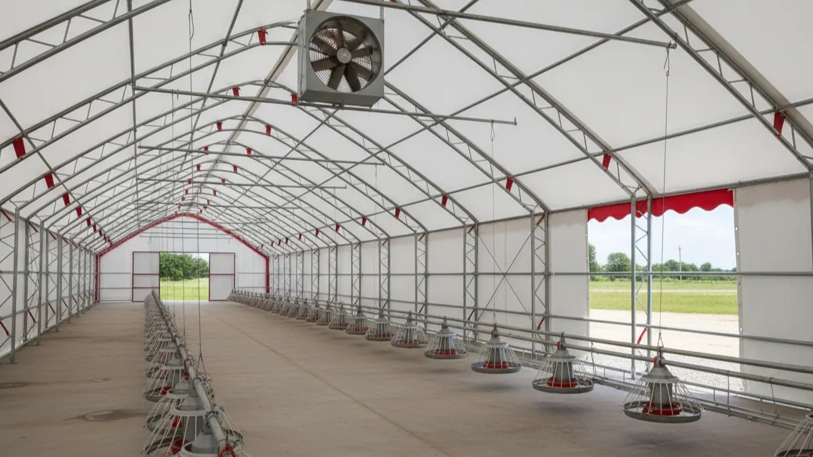
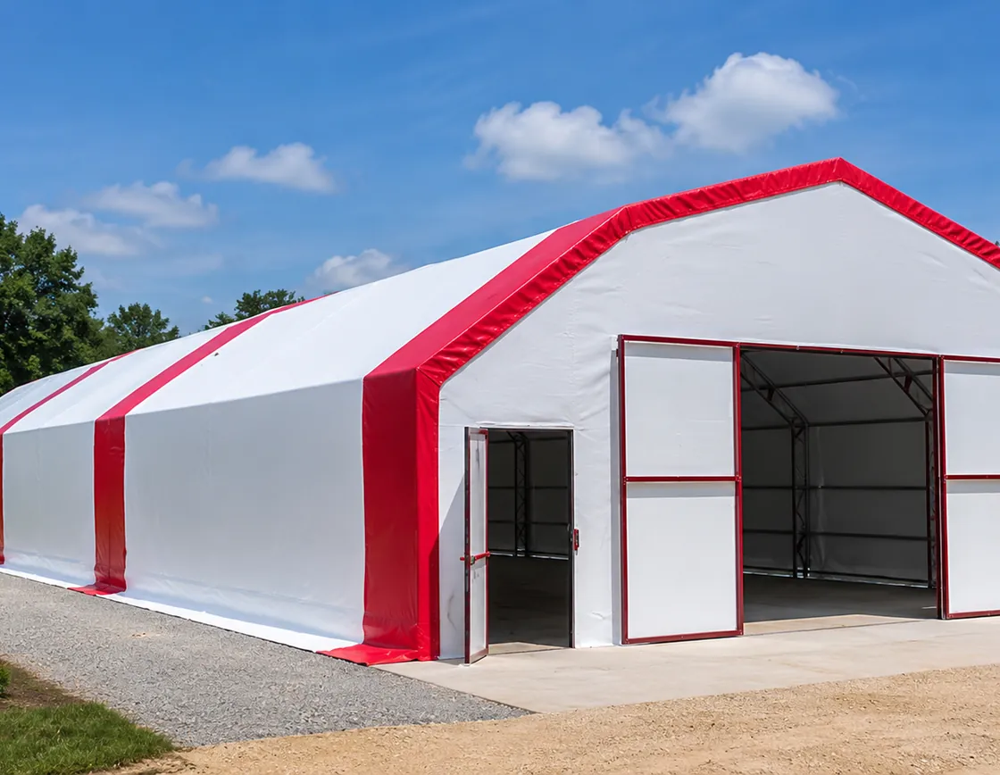

Kümes havalandırması ve koku kontrolü: amonyak ve fan
Kümese girdiğinde gözünü yakan o keskin koku tesadüf değil, bir alarm. Amonyağı, nemi ve sıcağı atarken cereyan yapmadan nasıl dengeleyeceğini, fanı kaç m³/saat seçeceğini sahadan anlattım.

Kümesin kapısını açtın, daha bir adım atmadan gözünün ucu yaşardı, boğazın yandı. Tavuklar aşağıda gayet keyifli görünüyor olabilir ama o keskin koku boşuna değil. Burnunun aldığı şey amonyak ve sen onu hissediyorsan iş çoktan sınırı geçmiş demektir. Havalandırma dediğimiz mesele işte tam burada başlar: kümesin içindeki havayı gözle göremezsin ama tavuğun ciğeri, gözü ve yumurtası her gün onu ödüyor.
Havalandırmayı çoğu kişi "pencere açıp kapatmak" sanır. Değil. İşin özü bir denge kurmaktır: gazı, nemi ve fazla sıcağı dışarı atacaksın ama bunu yaparken tavuğun üstüne soğuk cereyan da vurdurmayacaksın. Ne çok, ne az. Bu ipin üstünde yürümeyi öğrenen kümesin kokmaz, hasta olmaz; öğrenemeyen ise hem verim kaybeder hem komşuyla başı derde girer.
Amonyağı burnunda hissediyorsan zaten geç kaldın
Amonyak, tavuk dışkısındaki azotun altlıkta bakterilerle parçalanmasıyla çıkan keskin, boğucu bir gaz. Sinsi tarafı şu: insan burnu amonyağı ancak 20-25 ppm civarında net alır. Yani sen "amanın burada koku var" dediğin anda tavuklar çoktan zarar görmeye başlamıştır.
- 10 ppm: Henüz burnun almaz ama solunum yolu sinsice tahriş olmaya başlar.
- 25 ppm: Belirgin koku. Gözler sulanır, solunum yolları zarar görür, verim düşmeye başlar. Sınır burasıdır.
- 50 ppm ve üstü: Gözlerde yanma, kör olma riski, ciğer hasarı, yumurta veriminde ciddi düşüş, hastalıklara açık kapı.
Kaba bir saha ölçütü: kümese girdiğinde diz hizasına, yani tavuğun kafası seviyesine eğil. Orada gözün yanıyor, burnun sızlıyorsa 25 ppm'i geçmişsindir. Çünkü amonyak havadan biraz hafiftir ama en yoğun olduğu yer altlık yüzeyi, yani tavuğun nefes aldığı hizadır. Sen ayakta dururken almadığın kokuyu tavuk bütün gün soluyor.
Nem, amonyak ve altlık: kırılması gereken üçgen
Amonyağın tek başına iş yapmadığını anlamadan bu işi çözemezsin. Amonyak, nem ve altlık birbirini besleyen bir üçgendir. Altlık ıslanır, nem yükselir, nemli altlıkta bakteri coşar, bakteri azotu amonyağa çevirir. Kuru altlıkta ise bu döngü neredeyse durur.
İşte bu yüzden koku sorununun yarısı aslında bir nem sorunudur. Kümes içi bağıl nemi %50-70 bandında tutmak gerekir. %70'i geçtiğinde altlık cıvıklaşır, topaklaşır, amonyak fışkırır. Nemin kaynakları bellidir: tavuğun nefesi ve dışkısı, sızdıran suluklar, yağmur suyu ve kışın duvarda yoğuşan buhar. Suluk altları çamur oluyorsa orayı çözmeden fanı büyütmek deveyi hendekten atlatmaz.
Altlığın kendisi de belirleyici. İnce, tozlu ya da yetersiz altlık nemi tutamaz, çamurlaşır. Doğru malzeme ve kalınlık için kümes altlığı (litter) seçimi ve yönetimi yazısına bak; talaş 8-10 cm serilmeli, ıslanan yer düzenli havalandırılıp kabartılmalı. Bir de bu işin geliri var: kuru, iyi yönetilen altlık ve gübre boşa gitmez, tavuk gübresini gelire çevirmek yazısında anlattığım gibi para eder.
Doğal havalandırma: baca etkisi ve açıklık oranı
Küçük ve orta sürüde (diyelim 500 tavuğa kadar) çoğu zaman motor-fan gerekmez; doğru tasarlanmış doğal havalandırma yeter. Mantığı basit fizik: sıcak hava yükselir. Kümesin içinde ısınan kirli hava tavana çıkar, oradan çatı sırtındaki ya da üst kısımdaki bir çıkıştan dışarı süzülür; boşalan yerine alt taraftaki girişlerden temiz hava emilir. Buna baca etkisi denir ve bedava çalışır.
İki şart var. Birincisi giriş ve çıkışın yükseklik farkı olacak; giriş aşağıda, çıkış yukarıda. Aradaki fark ne kadar açıksa çekiş o kadar güçlü. İkincisi açıklık oranı. Kaba kural olarak çıkış (üst) açıklığı ile giriş (alt) açıklığı toplamı, taban alanının en az %3-5'i kadar olmalı; çıkışlar üstte, girişler altta ve karşılıklı dağıtılmalı ki hava kümesi baştan sona tarasın, bir köşede ölü bölge kalmasın.
Doğal sistemin zayıf noktası rüzgârsız, sıcak yaz günleri. Hava durgunsa baca etkisi zayıflar, işte o zaman devreye tek bir yardımcı fan girebilir. Yazın asıl derdin sıcak stresiyse bunu yazın kümes nasıl serin tutulur yazısında ayrıca ele aldım; koku ve sıcak çoğu zaman aynı fanla çözülür.
Mekanik havalandırma: fan kaç m³/saat çekmeli?
Sürü büyüdükçe ve kümes kapalılaştıkça doğal çekiş yetmez, egzoz fanı şart olur. Fanı gözü kapalı "büyük olsun da çeksin" mantığıyla almak da yanlış; hesabı var. İki ayrı senaryoya göre boyutlanır:
- Yaz maksimumu (sıcak atma): Yumurtacı tavuk için yaklaşık tavuk başına 4-5 m³/saat hava lazım. Amaç iç sıcaklığı dış sıcaklığa yakın tutmak.
- Kış minimumu (nem ve gaz atma): Burada çok az hava yeter; tavuk başına 0,6-0,8 m³/saat. Amaç nemi ve amonyağı atmak ama sıcağı kaçırmamak. Kışın fanı kısık ve aralıklı, zamanlayıcıyla çalıştırırsın.
Aradaki fark uçuk: aynı sürü için yaz kapasitesi kış kapasitesinin 6-7 katı. Bu yüzden tek bir dev fan değil, kademeli çalışan birkaç fan mantıklıdır; kışın biri çalışır, yaz sıcağında hepsi devreye girer. Fanı zamanlayıcı ve termostatla yönetmek işi kolaylaştırır; bu otomasyon tarafını kümes otomasyonu ve otomatik sistemler yazısında konuştuk.
Fan kapasite ve sürü büyüklüğü tablosu
Aşağıdaki tablo yumurtacı sürü için kaba bir pusula. Değerleri kümesinin yalıtımına, tavan yüksekliğine ve iklimine göre biraz oynatabilirsin ama büyüklük mertebesi budur.
| Sürü (tavuk) | Kış min. debi (m³/saat) | Yaz maks. debi (m³/saat) | Önerilen fan kurulumu |
|---|---|---|---|
| 100 | ~70 | ~500 | Doğal + 1 küçük yardımcı fan (30 cm) |
| 250 | ~175 | ~1.250 | 1 x 40 cm fan + doğal giriş |
| 500 | ~350 | ~2.500 | 1 x 50 cm fan (kademeli) |
| 1.000 | ~700 | ~5.000 | 2 x 50 cm ya da 1 x 90 cm tünel fanı |
| 2.000 | ~1.400 | ~10.000 | 2-3 x 90 cm tünel fanı, kademeli |
Kaba fan çapı-debi referansı: 30 cm fan yaklaşık 1.500-2.500 m³/saat, 40 cm 3.000-4.500, 50 cm 6.000-9.000, 90 cm sanayi tipi tünel fanı 30.000-40.000 m³/saat çeker (marka ve devire göre değişir, etikete bak). Gördüğün gibi bir 90'lık fan 2.000 tavuğun yaz ihtiyacını rahat karşılar; mesele adet değil, doğru yerleşim ve hava girişinin fana yetecek genişlikte olması. Giriş dar kalırsa fan boşuna zorlanır, elektrik yakar, hava gelmez.
Kışın yoğuşma ve cereyan tuzağı
Kış bu işin en çetrefil yanı. Üşürüz diye kümesi sımsıkı kapatırsın, o an içerisi ısınır ama tavuğun nefesinden ve dışkısından çıkan nem gidecek yer bulamaz. Nem soğuk duvara, tavana çarpınca su olur; buna yoğuşma denir. Tavandan damlayan su altlığı ıslatır, ıslak altlık amonyağı fışkırtır. Sonuç: sıcak tutayım derken hem nemli hem kokulu hem de hastalıklı bir kümes.
Çözüm sıfır havalandırma değil, kontrollü minimum havalandırma. Kışın bile o tavuk başına 0,6-0,8 m³/saatlik havayı vereceksin; fanı zamanlayıcıyla saatte birkaç dakika çalıştırmak çoğu zaman yeter. Bir de yalıtım devreye girer: iyi yalıtılmış duvar ve tavanda iç yüzey soğumaz, soğumayan yüzeyde nem yoğuşmaz. Kışın yalıtım-yoğuşma-havalandırma dengesini ayrıca kışın kümes nasıl sıcak tutulur yazısında derinlemesine anlattım.
Cereyan meselesi de tam burada. Havalandırma iyi ama giriş yanlış yerdeyse soğuk hava doğrudan tavuğun üstüne düşer. Tavuk cereyanı sevmez; soğuk esinti tüylerin arasına girer, tavuk üşür, hastalanır, yumurtayı keser. Kural: kışın taze hava tavuğun üstünden değil, üstünden geçip kümes havasına karışarak inmeli. Girişleri yukarıya, tavana yakın ve içeri doğru yönlendir; soğuk hava tavana çıkıp ısınsın, tavuğun üstüne ılıkça insin. Fanla girişin dengesini kuramazsan ya kokarsın ya üşütürsün; orta yol ustalık ister.
Bir de kapasiteyi zorlama tuzağı var. Kümes kaç tavuk alır bilmeden sıkıştırırsan hiçbir fan yetmez; doğru yerleşim için tavuk başına kaç metrekare gerekir yazısındaki hesabı yap. Az yere çok tavuk = çok gaz, çok nem, çözülmez koku.
Komşu şikâyetinin kökü havalandırmada biter
Köyde ve kasabada tavukçuluğa başlayanın en sık başına gelen bela nedir? Komşu şikâyeti. "Kokudan duramıyoruz" diye belediyeye, jandarmaya verilen dilekçeler çoğu zaman kötü havalandırmanın faturasıdır. İşin acı tarafı, kümesi iyi yönetince o koku büyük ölçüde kaybolur.
Çünkü keskin kokunun kaynağı yine o üçgen: ıslak altlık, yüksek nem, yönetilmeyen amonyak. Altlığını kuru tutan, fanını doğru çalıştıran, gübresini biriktirip açıkta bekletmeyen kümes rahatsız edici kokuyu ciddi biçimde bastırır. Fanın çıkışını da komşu tarafına değil, hâkim rüzgârın komşudan uzağa taşıyacağı yöne vermek küçük ama etkili bir hamle. Kümesi baştan doğru yere kurmak bu davaların yarısını daha o gün kapatır; konum ve mesafe seçimini kümes nereye kurulmalı, komşu şikâyeti yazısında ayrıntısıyla anlattım.

1.000 Tavukluk Tavuk Çadırı
Havalandırmayı sonradan yamamak yerine baştan doğru kurulmuş bir barınakla başla: 1000 tavukluk yalıtımlı Tavuk Çadırı, 3-4 kat yalıtımı ve planlı çatı-yan açıklıklarıyla kışın yoğuşmayı, yazın sıcağı ve o keskin amonyak kokusunu daha ilk günden dizginler; 81 ilde anahtar teslim kurulur.
Yalıtımlı brandalı çadır kümesin havalandırma açısından bir avantajı, gövdenin baca etkisine uygun yüksek bir profil vermesi ve giriş-çıkış açıklıklarının planlı bırakılabilmesidir. Betonarme mi çadır mı derdindeysen maliyet ve konfor karşılaştırmasını kümes maliyeti: betonarme mi çadır mı yazısında bulursun.
Son bir saha tavsiyesi: fana ya da açıklığa güvenip işi bitmiş sayma. Kümesine gir, diz çök, altlık hizasında bir nefes al. Gözün yanmıyorsa, boğazın sızlamıyorsa, altlık ayağının altında kuru ve gevşekse havalandırman iş görüyor demektir. O testi her sabah yap; kokuyu tavuk sana söyleyemez ama burnun söyler.
Sık sorulanlar
Kümeste amonyak kokusu kaç ppm'de zararlı olur?
Kümes fanı kaç m³/saat olmalı?
Küçük kümeste fan şart mı, doğal havalandırma yeter mi?
Kümes kışın neden terliyor ve kokuyor?
Havalandırma cereyan yapmadan nasıl olur?
Komşunun koku şikâyetini nasıl önlerim?
Projenizi birlikte planlayalım
Kapasitenizi ve bölgenizi yazın; ölçü ve teklifi birlikte çıkaralım.
Kapasitenizi yazın